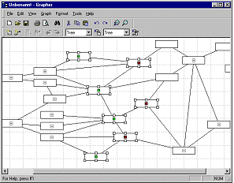
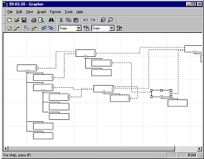

Grapher is a visual editor for tree and network structures. The application features an office-like user interface and a full ActiveX/COM interface for automation which can be configured by referencing user-programmed node components and edge layouts.   |